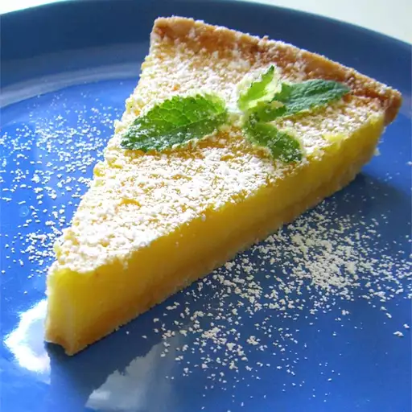

Tart Lemon Triangle

Description:
These tart lemon "pies" are a lovely conclusion to an elegant spring dinner! I garnish them with whipped cream, a strawberry fan, and a sprig of mint.
Ingredients:
- 1 cup all-purpose flour
- 6 tablespoons unsalted butter
- ¼ cup confectioners' sugar
- 3 large eggs
- 1 cup white sugar
- ¼ cup lemon juice
- 1 tablespoon grated lemon zest
- 3 tablespoons all-purpose flour
- 2 tablespoons confectioners' sugar for dusting
Steps:
- Preheat the oven to 350 degrees F (175 degrees C).
- Process 1 cup flour, butter, and 1/4 cup confectioners' sugar in a food processor for 10 seconds, or blend with a pastry blender until a dough forms. Pat dough evenly into a 9-inch round pie plate.
- Bake in the preheated oven until golden, 12 to 15 minutes.
- While crust bakes, combine eggs, white sugar, lemon juice, lemon zest, and 3 tablespoons flour; mix until smooth. Pour egg mixture over hot crust.
- Bake in the preheated oven until firm, 15 to 20 minutes more. Let cool completely in pie dish, about 1 to 2 hours. Sprinkle with 2 tablespoons confectioners' sugar and cut into 12 triangles.
To get original details, you can visit here